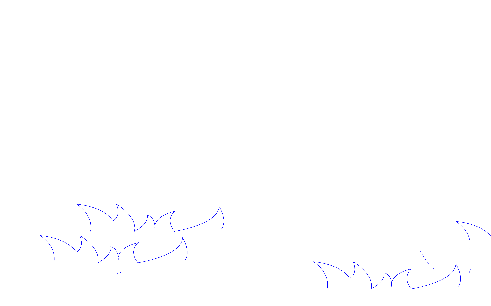

Welcome to Saki Ji's personal website, where you can see a selection of Saki ji's works & personal introduction. Please enjoy browsing this site.

What does a child think about when she is drowning? Struggling or calling for help? Maybe just admiring the world in front of her. I named my space Boundary, hoping to express through it the perspective I had as a young child. It is a space with a sense of liminality, with sounds of talking, splashing and sounds I have never heard before. It is wrapped in blue and reflects different colours. In this space I have placed blue cellophane on the sides of the walls and on the floor, both to divide the space and to blur the boundary between the water and the floor through colour. The upper part of the space is made of transparent tape of different colours to simulate the refraction of water light, and the gaps between the tapes form a net that wraps the viewer's eyes, hoping that the viewer in this space will experience the depth and breathlessness of the sea.